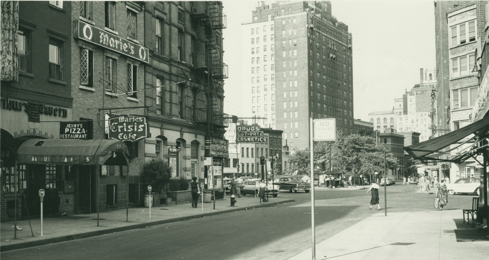

Greenwich Village, New York
Since 1938
Garfein’s
Delicatessen
& Appetizing
& Appetizing

Our store on West 10th, a few doors from the Sixth Precinct.Platters 60¢ more
Hot from the steam table
Hot pastrami on rye1.35
Steamed soft, hand sliced, piled high, with mustard and a pickle.
The Village hero1.73
Steamed pastrami, Swiss, slaw and Russian dressing on a long roll.
Hot corned beef on rye1.35
Brisket cured in our own brine, carved to order, with mustard.
Roast beef on a kaiser1.25
Rare top round, sliced thin while you wait. Ask for it lean.
GUEST CHECKNo. 0619
Paco
1 pastrami rye1.35
1 coffee.15
Total1.50
PAID